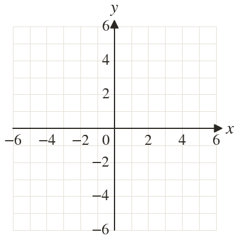
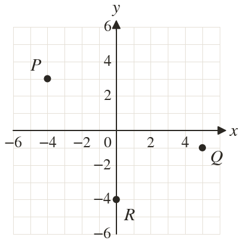
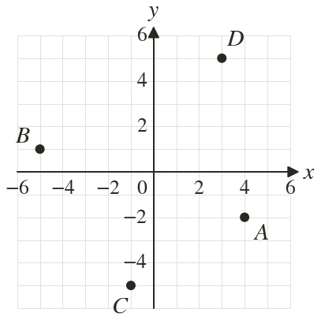
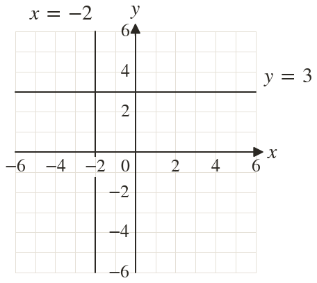

Westonbirt Maths · Linear Graphs and y = mx + c
Coordinates and Gradients
Name: ______________________ Date: ____________
1
Plot and and state the quadrant of each.
2
Write down the coordinates of P, Q and R. Which point is in no quadrant?
3
Write the equations of the vertical line and the horizontal line through
4
Draw the lines and on the grid. Where do they cross?
5
Kai plots by going left and up. What is wrong?
Ext
A rectangle has corners at and Find the fourth corner and the equation of each side.



